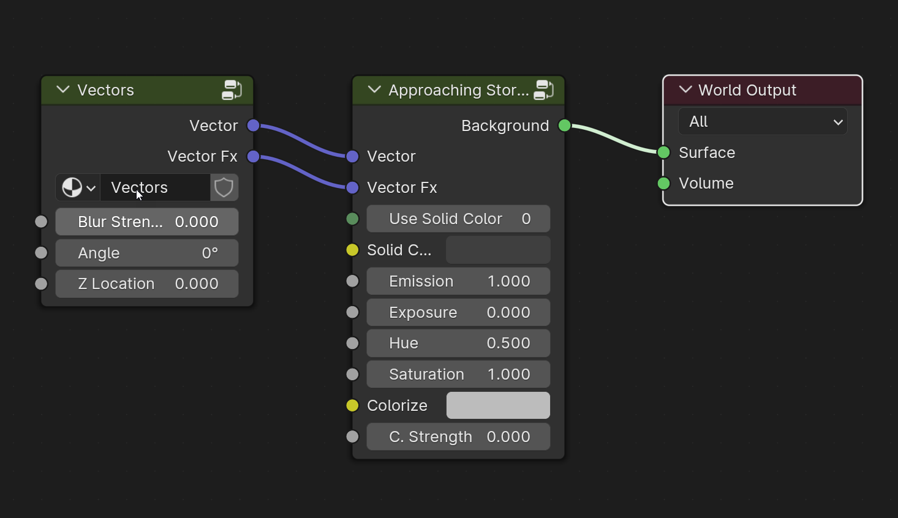
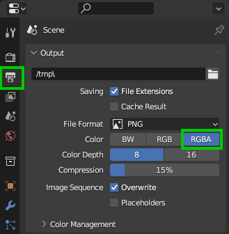
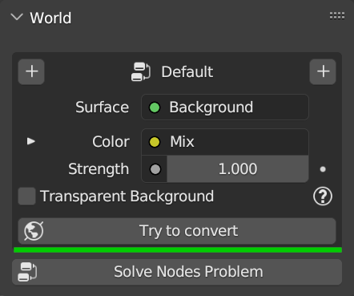

World
Tip
Here you can find a video tutorial of this section at work: World manipulation
Here below the World Panel is shown as it is usually when a new world is added, from the HDRi Maker library:
Example With HDRi Maker Standard Background |
|
{kind=link}
The World panel is the one that allows you to adjust the World Background, it is consistent with the nodes that are found in the world node tree, so it is drawn based on the various situations.
Example of the simple HDRi Maker Node Tree setup:

{kind=link}
Add Diffuse/Light
Depending on the situation, it may happen that you want to show a solid color visually as a background and keep the HDR image lighting. Here below the 2 buttons that allow you to do this:
Add Diffuse
If you want to add a solid color and keep the current background, this button will add a new background on the left of the panel, it will be visible, but it will not have any effect on the scene, so it will not affect the light.
Add Light
- If you add the background through this button, the current background will be visible, but it will not affect the light,
while the new background will not be visible and will affect the light.
Color Properties (Inputs)
Use Solid Color (Button)
If on, it will use a solid color instead of the image. The color property will appear once activated.
Solid Color (Rgba)
The color of the solid background. (Only visible if Use Solid Color is on)
Emission (Value)
Adjust the emissivity of the background world. If at 0 no emissivity (therefore completely black/dark background). Attention, on Eevee at the moment the background does not produce shadows, to add shadows, it is advisable to add a ‘SUN’ light
Exposure (Value)
Adjust background exposure
Hue (Value)
Adjust the HUE of the background
Saturation (Value)
Adjust the Saturation of the background
Colorize (Rgba)
Colorize the background without completely replacing the image with color.
C. Strength (Value)
Adjust the amount of colorization
Vector Properties (Inputs)
Blur Strength (Value)
The strength of the blur applied to the background image, 0 = no blur, 1 = full blur
Angle (Value)
The rotation angle of the background image
Z Location (Value)
The Z location of the background image 0 is the default location, a higher value raises the image, a lower value lowers it
Other Properties
Depending on the situation, additional properties may be displayed.
Transparent Background
If on, the background will be transparent, this is useful to make rendering with transparent background, or to use the background as a mask for compositing.
Note
Make sure you render with RGBA otherwise the transparency will not be displayed, in this example, the rendering is set as PNG (Which supports the Alpha channel, i.e. transparency)

{kind=link}
Solve Node Problems
In some cases (If for example the node tree has been manually manipulated) this should solve any problems with the node tree, so that it can be used again.
Diffuse and Light Situation
If you have added a Diffuse or Light node, the World panel will change in this way:
Example With HDRi Maker Diffuse + Light Background |
|
{kind=link}
Remove Diffuse
This button removes the diffuse node group from the node tree. Once removed, the “Light” node takes the role of the diffuse and light, so the color of the diffuse will be that of the Light, and the Light will be visible. (You return to the initial state) See here: World
Change Diffuse
This button is used to load a background for the Diffuse Press SHIFT+Click to import a Background. (If SHIFT is not pressed, it will be loaded from the current preview of the HDRi Maker library)
Invert Diffuse/Light
This button inverts the Diffuse with the Light, and vice versa. Once pressed, in the interface, the left column moves to the right, and the right column to the left.
Change Light
This button is used to load a background for the Light Press SHIFT+Click to import a Background. (If SHIFT is not pressed, it will be loaded from the current preview of the HDRi Maker library)
Remove Light
This button removes the Light node group from the node tree. Once removed, the “Diffuse” node takes the role of the diffuse and light, so the color of the diffuse will be that of the Diffuse, and the Diffuse will be visible. (You return to the initial state) See here: World
Change Light Path
This selector allows you to choose which type of blend to use between Diffuse and Light, there are 2 options
- Is camera ray
Allows you to view the Diffuse only in the camera and point of view, but it will have no effect on the light.
- Is Reflection Ray
Excludes the Light in reflections, this in some cases is useful for the shadow catcher, when you add a reflection on the shadowcatcher, it will reflect only the objects in the scene, but not the Light, so you will not see any image of the background reflected on the shadowcatcher here: Shadow Catcher
Unknown world Situation
When a World is not recognized as an HDRi Maker world, the panel draws an interface similar to the native of Blender, this is good, but it is not optimal, because with it it is not possible to use some advanced functions of HDRi Maker.
Here is an example of the situation that can occur:
{kind=link}
This situation occurs in 2 occasions:
When the World present in the scene was not created with HDRi Maker
When you remove a World with HDRi Maker, and a Default World “Gray” is created automatically (By the way, if you don’t want it to happen, press “Shift” + Remove)
So the “Try To convert” button will try to recover an HDR/EXR image from the World, if present, the image will be taken and transported into an HDRi Maker World, then it will be applied to the scene. This is useful to fully exploit the HDRi Maker functions.
Note
It will only work if there is an HDR/EXR image. The script analyzes all Group nodes and Subgroup nodes, so in most cases it should work.
If you want to use this configuration as “Light” or “Diffuse” you can do it, just press one of the 2 buttons (+) at the top of the panel this will try to use the current nodes as if they were those of HDRi Maker to configure a “Diffuse” or a “Light” As explained here: Add Diffuse/Light